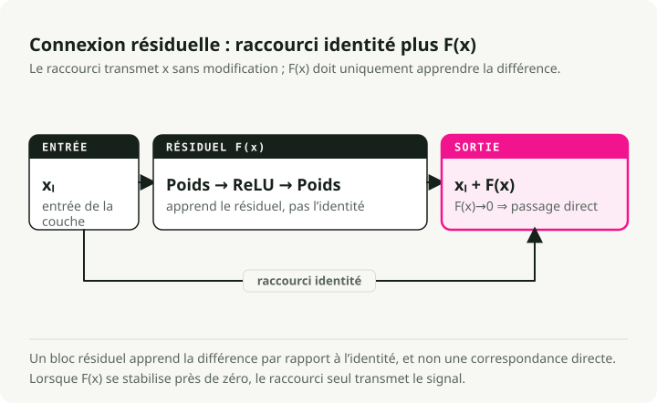
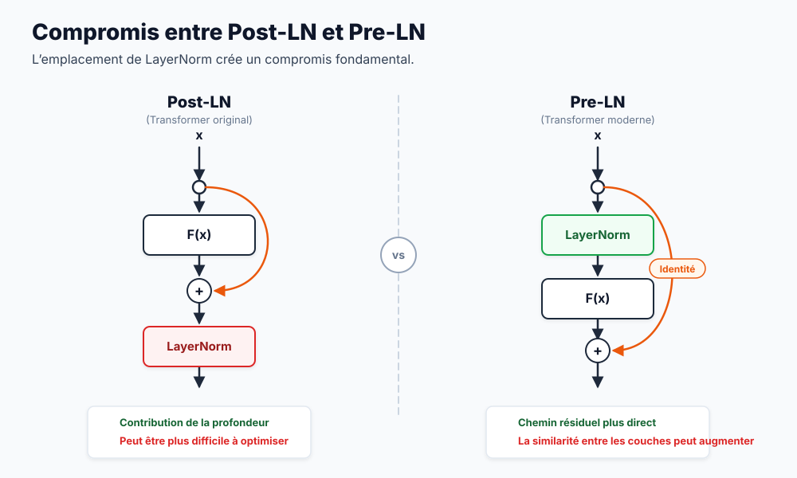
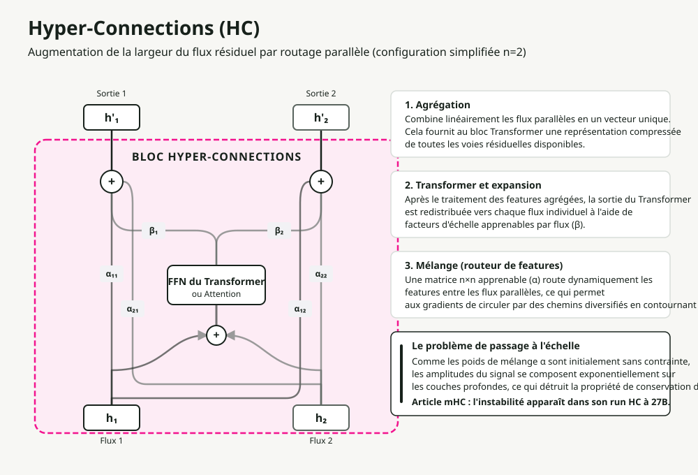
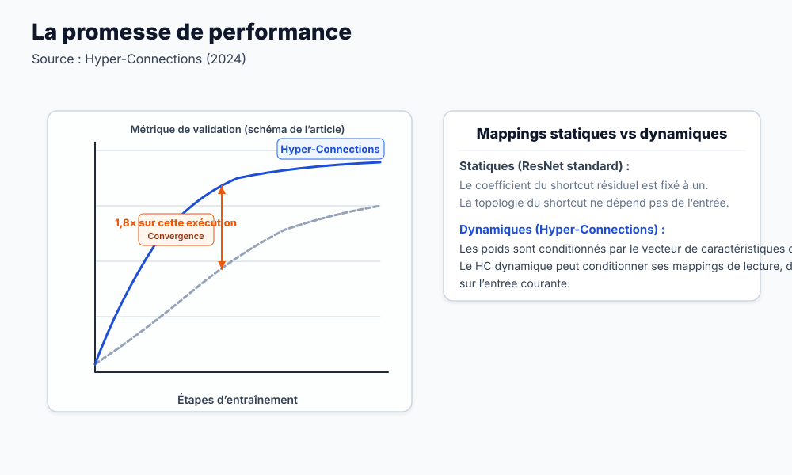
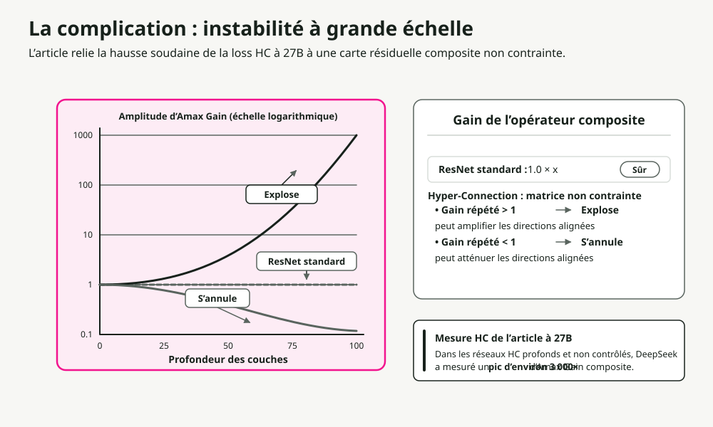
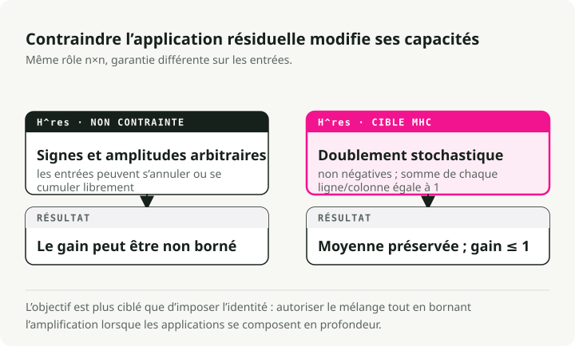
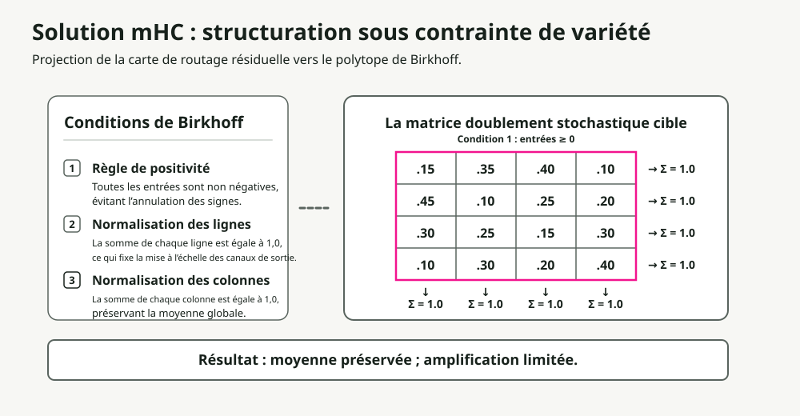
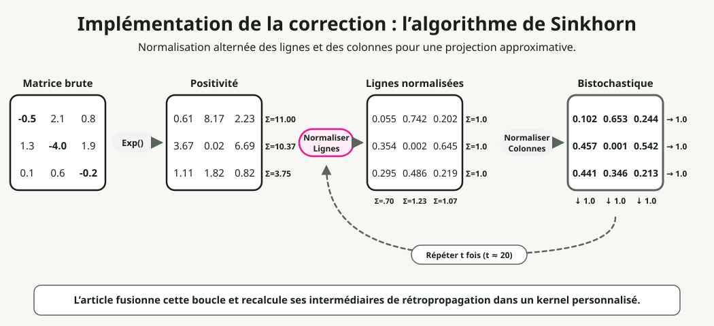
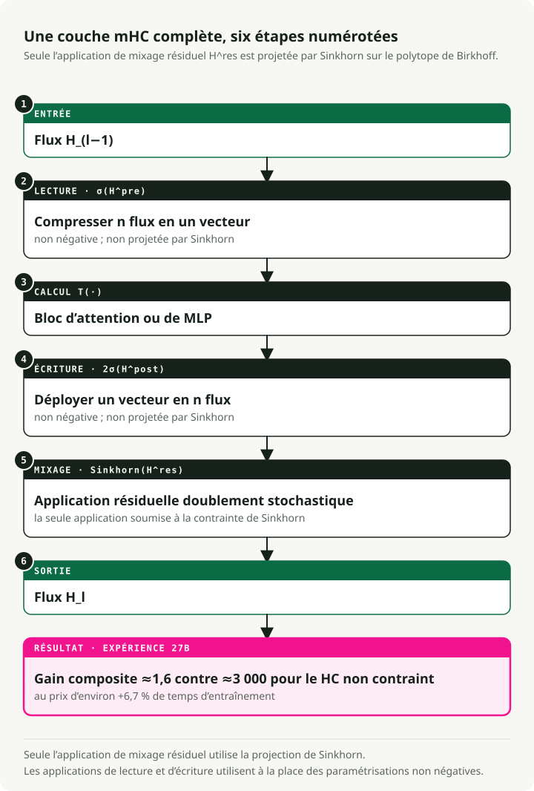

Traduction automatique
Cet article a été traduit automatiquement depuis la version originale en anglais.
Connexions hyper-réstraites par manifold (mHC) : Explication de l’échellenement résiduel de DeepSeekHyper-conexions contraintes par un manifond (mHC)
En résumé : Les hyper-connections transforment les flux résiduels en plusieurs flux parallèles afin d’accélérer la convergence, mais elles perturbent la correspondance d’identité qui assure la stabilité de l’entraînement. mHC restaure cette stabilité en restreignant les matrices de mélange au polytope de Birkhoff (matrices doublement stochastiques) à l’aide de l’algorithme différentiable Sinkhorn-Knopp. Résultat : 4 flux parallèles avec seulement 6,7 % de surcoût d’entraînement.
Pourquoi les connexions résiduelles fonctionnent
Avant d’examiner ce que corrige mHC, il est nécessaire de comprendre sur quoi il s’appuie.
Le problème de la profondeur
L’ajout de couches supplémentaires devrait augmenter la capacité d’un modèle. En pratique, les réseaux très profonds deviennent plus difficiles à entraîner. La capacité est bien présente ; c’est l’optimisation basée sur les gradients qui échoue : les gradients disparaissent (en se réduisant à presque zéro) ou explosent (en augmentant indéfiniment) au fur et à mesure qu’ils se propagent à travers de nombreuses couches.
La solution des connexions résiduelles
Le Article de ResNet une correction élégante a été introduite. Au lieu d’apprendre une correspondance directe, il suffit d’apprendre le résidu, c’est-à-dire la différence par rapport à l’identité :

Le truc réside dans le raccourci d’identité. Lorsque la fonction résiduelle F(x) produit zéro, la couche devient un véritable passe-through. Deux conséquences en découlent :
- Autoroute des gradients : Les gradients circulent directement à travers ce raccourci, évitant ainsi l’effet de disparition.
- Optimisation simplifiée : Si l’identité est optimalement choisie, le réseau n’a qu’à apprendre F(x) → 0.
Ce seul changement architectural a permis d’entraîner des réseaux comptant des centaines de couches.
La complication des Transformers : emplacement de la normalisation par couche
Les Transformers ont introduit une nouvelle variable : l’endroit où placer la normalisation par couche (Layer Normalization, LN). Cette décision semble mineure, mais elle ne l’est pas.

| Variante | Placement LN | Avantage | Limite majeure |
|---|---|---|---|
| Post-LN | Après le bloc résiduel | Haute capacité du modèle | Disparition du gradient : la fonction LN dans le chemin principal rééchelle les gradients à chaque couche |
| Pré-LN | Avant le bloc résiduel | Stabilité exceptionnelle | Effondrement de la représentation : les caractéristiques deviennent similaires d’un niveau à l’autre |
Le ResiDual L’architecture a tenté de résoudre ce problème en utilisant des chemins résiduels doublés : un pré-LN pour assurer la stabilité et un post-LN pour améliorer la capacité. Il s’agit cependant toujours d’un seul flux résiduel. Que se passerait-il si l’on pouvait disposer de plusieurs flux parallèles ?
Hyper-Connections : La révolution de la largeur
Hyper-Connexions (HC) Il a emprunté une autre voie. Ne vous contentez pas d’augmenter la profondeur : élargissez plutôt la largeur du flux résiduel.

Qu’est-ce qu’une « stream » ?
Dans les transformateurs standards, les embeddings des tokens d’entrée forment un vecteur unique de dimension \(d\) représentant les caractéristiques du token. Cette séquence de vecteurs constitue la « stream résiduelle » qui traverse chaque bloc.
Avec Hyper-Connections, une stream correspond à l’une des \(n\) instances parallèles de cet état.
Comment les obtenir ? Au début du réseau, l’embedding d’entrée initial est dupliqué \(n\) fois (où \(n\) représente le « taux d’expansion », généralement 4). L’état caché standard de dimension \(d\) devient alors une « matrice cachée hyper » de taille \(n \times d\).
Ces \(n\) streams identiques traversent les couches transformateur du réseau, où ils sont agrégés, redirigés et étendus différemment grâce aux mécanismes décrits ci-dessous. Ils divergent ainsi immédiatement et captent des voies de représentation distinctes.
Mécanismes fondamentaux
Plutôt que d’utiliser une seule voie résiduelle, HC maintient \(n\) streams parallèles circulant dans l’ensemble du réseau. Dans chaque bloc transformateur, trois opérations sont effectuées, chacune contrôlée par de petits poids apprenables :
- Aggregation (\(H_{pre}\), pré-mappage) : Les \(n\) flux entrants sont compressés en un seul vecteur destiné au bloc transformateur, à l’aide d’une matrice apprenable \(H_{pre}\). Chaque flux est multiplié par un poids d’importance apprenable, ce qui agit comme un filtre d’entrée.
- Expansion (\(H_{post}\), post-mappage) : Après le bloc transformateur principal (Attention ou MLP), sa sortie est diffusée dans \(n\) flux distincts au moyen d’une matrice apprenable \(H_{post}\). Celle-ci fonctionne comme une porte de sortie, chaque flux étant scalaire par un poids apprenable unique.
- Mélange (affectation inter-flux) : Les flux nouvellement générés se combinent avec les flux résiduels originaux. Une matrice apprenable de type « routage des caractéristiques » de taille \(n \times n\) (\(\mathbf{H}^{res}\)) détermine la manière dont les informations provenant de chaque flux s’infiltrent dans les autres, permettant ainsi un croisement de caractéristiques avant l’étape suivante.
La matrice de mélange \(H\) agit comme un régulateur de flux : elle dirige les caractéristiques d’un flux à un autre en se basant sur des motifs appris. Les informations circulent ainsi de manière bien plus riche que par le biais d’un seul chemin résiduel.
Les résultats

L’HC converge approximativement 1,8 fois plus rapidement que les résidus standards. Les flux parallèles offrent aux gradients davantage de voies d’évolution, permettant au réseau de conserver des représentations plus diversifiées.
Le problème
Il existe un problème critique : l’HC est instable à grande échelle.
Pourquoi les hyper-connections échouent
La flexibilité qui permet au HC de fonctionner est également ce qui le fait échouer. Elle détruit la correspondance d’identité qui rend possibles l’entraînement des résidus en premier lieu.

La mathématique de l’instabilité
Dans les résidus standards :
Lorsque \(F(x) \rightarrow 0\), cette équation devient une identité : \(x_{l+1} = x_l\). Le signal passe à travers sans modification.
Dans les Hyper-Connections, le chemin résiduel comprend une multiplication matricielle :
Après L couches, le signal prend la forme suivante :
Si les valeurs contenues dans \(\mathbf{H}\) s’éloignent ne serait-ce que légèrement de 1,0, ce produit peut soit :
- Exploser : les valeurs supérieures à 1,0 s’accroissent de manière exponentielle.
- Disparaître : les valeurs inférieures à 1,0 décroissent de manière exponentielle.
L’équipe de DeepSeek mesure ce phénomène à l’aide du « Amax Gain Magnitude », qui indique le rapport maximal entre l’amplitude du signal de sortie et celle de l’entrée à travers toutes les couches. Dans les Hyper-Connections standards, cette valeur atteint ~3000 dans les réseaux profonds. À ce stade, l’entraînement devient impossible.

Le problème fondamental : les matrices non contraintes peuvent prendre n’importe quelle valeur (nombres négatifs, grandeurs importantes, etc.). Nous devons trouver un moyen de les maintenir dans l’ensemble des « matrices bien comportées », celles qui conservent l’énergie du signal de la même manière que la matrice d’identité.
La solution mHC : contraintes géométriques
L’idée clé derrière mHC est qu’il est possible d’obtenir à la fois une routage flexible et de la stabilité en imposant aux matrices de mélange une structure mathématique spécifique : le polytope de Birkhoff, c’est-à-dire l’ensemble de toutes les matrices doublement stochastiques, où la somme de chaque ligne et de chaque colonne est égale à 1 et où tous les éléments sont non négatifs.

Les trois contraintes
mHC contraint la matrice de mélange H^res à être doublément stochastique : toutes ses entrées sont non négatives, et la somme de chaque ligne ainsi que de chaque colonne est égale à 1. Cela impose simultanément trois propriétés :
| Contrainte | Règle | Pourquoi c’est important |
|---|---|---|
| Positivité | Tous les éléments > 0 | Empêche l’oscillation du signe qui déstabilise les gradients |
| Somme de la ligne = 1 | La somme de chaque ligne est égale à 1,0. | Normalise la contribution des sorties ; aucune flux unique ne domine. |
| Somme de la colonne = 1 | La somme de chaque colonne est égale à 1,0. | Normalise la distribution des données d’entrée ; tous les flux contribuent de manière équitable. |
Le résultat critique : Énergie d’entrée = Énergie de sortie. La magnitude du signal est préservée tout au long du réseau, ce qui élimine le problème de l’explosion exponentielle.
Cette contrainte présente également des conséquences mathématiques intéressantes :
- Norme spectrale ≤ 1 : La norme spectrale (valeur singulière maximale) limite l’amplification du signal. Les matrices doublement stochastiques sont mathématiquement non expansives.
- Clôture par multiplication : La composition de matrices doublement stochastiques produit une autre matrice doublement stochastique.
- Moyenne pondérée : L’opération devient une combinaison convexe (une moyenne pondérée dont les poids s’additionnent à 1) des entrées, préservant ainsi l’amplitude totale du signal.
L’algorithme de Sinkhorn-Knopp
Le défi : comment forcer une matrice apprenable à être doublement stochastique tout en maintenant sa différentiabilité ? L’algorithme Sinkhorn-Knopp y parvient. Il s’agit d’une projection itérative qui converge vers une forme doublement stochastique en seulement quelques étapes.

Une démonstration avec un exemple concret :
Étape 1 : Positivité. Appliquer la fonction exp() aux poids bruts afin que tous les éléments soient strictement positifs :
Raw Matrix → Positive Matrix
[-0.5 2.1 0.8] [0.6 7.9 2.2] Σ=10.7
[ 1.3 -4.0 1.9] exp [3.7 0.02 6.7] Σ=10.4
[ 0.1 0.6 -0.2] → [1.1 1.8 0.8] Σ=3.7
Étape 2 : Normalisation des lignes. Diviser chaque ligne par la somme de ses éléments :
Positive Matrix → Row Normalized
[0.6 7.9 2.2] [0.25 0.65 0.10] Σ=1.0
[3.7 0.02 6.7] /row [0.35 0.01 0.64] Σ=1.0
[1.1 1.8 0.8] → [0.30 0.45 0.25] Σ=1.0
Σ=0.9 Σ=1.1 Σ=0.99 ← columns not yet =1
Étape 3 : Normalisation des colonnes. Diviser chaque colonne par la somme de ses valeurs :
Row Normalized → Doubly Stochastic
[0.25 0.65 0.10] [0.28 0.45 0.27] Σ=1.0
[0.35 0.01 0.64] /col [0.40 0.09 0.51] Σ=1.0
[0.30 0.45 0.25] → [0.32 0.46 0.22] Σ=1.0
Σ=1.0 Σ=1.0 Σ=1.0 ← converges in few iterations
Étape 4 : Itérer. Répéter les étapes 2 à 3 un maximum de t_max itérations (généralement 20) jusqu’à convergence.
L’ensemble du processus est différentiable, ce qui permet aux gradients de circuler pendant l’entraînement. De plus, la méthode Sinkhorn-Knopp est peu coûteuse, ajoutant une charge minimale au cycle d’entraînement.
L’initialisation joue également un rôle crucial.
Améliorations de l’initialisation
Afin que l’entraînement débute de manière stable :
- Sigmoid plutôt que Tanh : Les coefficients restent non négatifs et bornés (de 0 à 1).
- Multiplicateur scalaire 2 : Les sorties sigmoid initiales sont d’environ 0,5. En les multipliant par 2, on obtient un poids initial d’environ 1,0, ce qui correspond au comportement identité.
Architecture complète mHC
En résumé :

Le flux à travers chaque bloc :
- Entrée : \(n\) flux résiduels parallèles entrent dans la couche.
- Aggregation (\(H_{pre}\)) : Les \(n\) flux sont combinés en un seul vecteur par une somme pondérée utilisant la matrice \(H_{pre}\). Dans mHC, ces poids d’aggregation sont localement contraints (\(\sigma(\cdot)\)) à être non négatifs, ce qui empêche une échelle anormale et des interférences destructrices.
- Calcul : Le bloc standard Transformer (Attention ou MLP) traite le vecteur agrégé unique.
- Expansion (\(H_{post}\)) : La sortie unique du bloc est diffusée et étalonnée en \(n\) flux de mise à jour distincts à l’aide de la matrice \(H_{post}\), qui est également contrainte à être non négative.
- Mélange (affectation \(H_{res}\)) : Les flux partagent des informations via une matrice de mélange \(n \times n\), \(\mathbf{H}^{res}\). Dans mHC, cette matrice est strictement contrainte au polytope de Birkhoff (stochastique double), ce qui permet de conserver l’énergie du signal.
- Sortie : Les \(n\) flux mis à jour passent à la couche suivante sans exploser ni disparaître.
La différence clé par rapport au HC standard réside dans le fait que chaque opération de mélange et d’aggregation passe par une contrainte de type Sinkhorn ou une normalisation similaire. C’est ce qui garantit la stabilité du signal sur des centaines de couches.
Infrastructure : Faire en sorte que cela soit pratique
L’extension à \(n=4\) flux génère un coût réel en ressources. Chaque flux nécessite sa propre mémoire, et Sinkhorn ajoute 20 itérations par couche. L’équipe de DeepSeek a trouvé des solutions grâce à plusieurs optimisations.
Fusion de noyaux
En utilisant TileLang, ils ont fusionné les itérations de Sinkhorn avec des multiplications en précision mixte au sein de noyaux CUDA spécialisés. Cela réduit les allers-retours vers la mémoire à large bande (HBM), qui constitue généralement le véritable goulot d’étranglement sur les matériaux modernes.
Recomputation sélective
Stocker chaque état intermédiaire de Sinkhorn pour la rétropropagation entraînerait une consommation mémoire exponentielle. À la place, mHC :
- Libère les activations intermédiaires après le passage en avant.
- Les recalcule dynamiquement pendant le passage en arrière.
Une version modifiée DualPipe Le planification des chevauchements fait que cette récomputation a lieu en même temps que la communication des gradients, ce qui fait que le coût de récomputation reste largement invisible.
Résultats
Grâce à ces optimisations, les exécutions avec un taux d’expansion n=4 ne génèrent qu’un surcoût de formation de 6,7 % par rapport au scénario de référence. Un routage topologique complexe devient ainsi praticable à grande échelle.
Validation empirique
Les garanties théoriques se traduisent-elles réellement par des améliorations concrètes ?
La dynamique de formation brute est très marquée. Sans contraintes, les réseaux profonds utilisant des Hyper-Connections standards voient l’amplitude de leur signal (Amax Gain) exploser jusqu’à environ 3 000, entraînant une instabilité massive et des pics fréquents de perte. Avec l’application de la contrainte doublement stochastique, mHC maintient l’Amax Gain autour de 1,6 tout au long de la formation.
Mais la stabilité n’a aucune importance si les performances du modèle se détériorent. Afin d’évaluer sa capacité de représentation, l’équipe a comparé un modèle mHC-27B (construit sur l’architecture DeepSeek-V3) aux référentiels standards ResNet ainsi qu’aux référentiels HC non contraints. Sur des benchmarks de raisonnement tels que GSM8K et MATH, mHC remporte systématiquement. Les améliorations de performance dues au routage par flux parallèles sont réelles, et avec les contraintes de Sinkhorn, il devient enfin possible d’entraîner ces voies résiduelles très larges sans que le processus d’entraînement ne s’effondre.
Compromis et considérations
mHC n’est pas une solution miracle. Trois points à retenir :
- Surcoût computationnel : 6,7 % représente un faible coût pour les avantages qu’il offre, mais cela reste un surcoût par rapport aux résidus standards.
- Complexité d’implémentation : Il est impossible d’écrire ce code en PyTorch classique en espérant obtenir des performances rapides. Ce faible surcoût exige des noyaux CUDA personnalisés et finement ajustés.
- Biais inductif fort : La contrainte stochastique double impose une conservation stricte du signal. Si votre tâche nécessite réellement une amplification du signal plus profondément dans le réseau, cette contrainte agit contre vous.
Points clés
- Les connexions résiduelles fonctionnent grâce à la mise en correspondance d’identité : capacité de faire passer les signaux sans les modifier.
- Les hyper‑connexions échelonnent la largeur plutôt que la profondeur, permettant une convergence plus rapide grâce à un routage multi‑flux.
- La flexibilité des HC détruit la mise en correspondance d’identité, provoquant une explosion des signaux dans les réseaux profonds.
- mHC restreint les matrices de mélange au polytope de Birkhoff, garantissant mathématiquement la stabilité.
- Sinkhorn‑Knopp rend cette contrainte différentiable, ce qui permet un entraînement bout en bout.
- Le travail d’infrastructure (fusion de noyaux, recomputation sélective) est ce qui rend tout cela pratique.
Pour les praticiens : si vous atteignez des limites avec l’échelonnement de la profondeur et que vous disposez de moyens pour développer des noyaux personnalisés, mHC constitue une approche fondée pour échelonner la capacité via la largeur tout en maintenant la stabilité de l’entraînement.